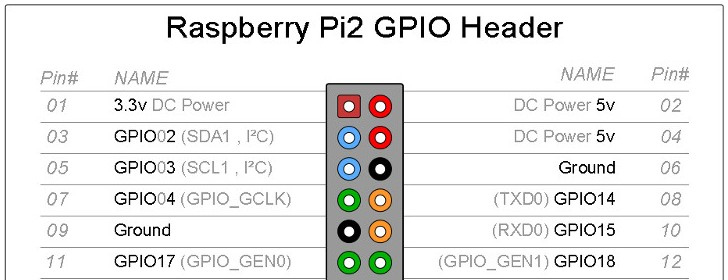

Installation and basic use of the Adafruit Ultimate GPS breakout on a Raspberry Pi 3. The installation starts with GPS over USB but, after running some tests, moves the GPS to UART. Mostly follows https://learn.adafruit.com/adafruit-ultimate-gps-on-the-raspberry-pi

Requirements
This guide will start with a basic Raspbian build, connected to a wired network. Follow the RPi Initial Setup Guide to get started. A Raspberry Pi 3 may be required for these procedures to work. A Raspberry Pi 2 can use this guide provided that it uses only the USB to TLL Serial cable connection. The UART connection method shown in this guide requires a pi 3.
Parts List
-
Raspberry Pi 3
-
16GB (or larger) class 10 MicroSD card
-
GPS breakout (Adafruit Ultimate GPS Breakout - 66 channel w/10 Hz updates - Version 3)
-
USB to TLL Serial cable (https://www.adafruit.com/products/954)
-
RTC module (included in the GPS breakout)
-
(Optional) External GPS antenna and SMA to u.FL adapter cable
GPS Breakout
The details of the pinouts, the logging capablities, and other features may be found by looking at the Adafruit references listed at the end of this document.
For basic usage, only four pins are used. These are: VIN, GND, TX, AND RX.
While the unit is attempting to get a fix, the red LED flashes once every second. Once the unit has a fix, it flashes once every 15 seconds.
For the optional antenna, push the adapter cable onto the board located u.FL connector. Then attach the antenna to the adapter cable and place the puck in a good reception area.
| Make certain to get the correct adapter cable as RP-SMA and SMA, while they look similar, are threaded opposite. |
GPS daemon (gpsd)
gpsd is a service daemon that monitors one or more GPSes or AIS receivers attached to a host computer through serial or USB ports, making all data on the location/course/velocity of the sensors available to be queried on TCP port 2947 of the host computer. See http://catb.org/gpsd/.
-
sudo apt-get install gpsd gpsd-clients python-gps -
Disable the gpsd systemd service.
-
sudo systemctl stop gpsd.socket -
sudo systemctl disable gpsd.socket
-
Now the gpsd needs to be started and pointed at either the USB device or the UART. Using USB to TLL or UART are covered in the next two sections. The commands are shown here for easy reference.
-
sudo killall gpsd -
USB to TLL use
sudo gpsd /dev/ttyUSB0 -F /var/run/gpsd.sock -
UART use
sudo gpsd /dev/ttyS0 -F /var/run/gpsd.sock
GPS using USB to TLL
The USB to TLL cable makes it quick and easy to test the GPS breakout with your pi.
Connections
Attach the colored wires from the USB to TLL cable to the GPS breakout thusly:
-
Red to VIN
-
Black to GND
-
Green to RX
-
White to TX
Insert the USB part of the cable into the pi.
Which USB
Determine which USB is being used by the GPS.
-
List the connected USB devices
ls /dev/ttyUSB*-
Typically you will only see the result of /dev/ttyUSB0
-
-
If needed you can list all USB devices with
sudo lsusb
gpsd and test
Point gpsd to the USB device.
-
sudo killall gpsd -
sudo gpsd /dev/ttyUSB0 -F /var/run/gpsd.sock -
Test with
cgps
| Before testing with cgps, it is good for the unit to have a location fix. |
GPS over UART
Connections
Attach the colored wires from the USB to TLL cable to the GPS breakout thusly:
-
VIN to 5V GPIO pin 04
-
GND to Ground GPIO pin 06
-
RX to TXD0 GPIO pin 08
-
TX to RXD0 GPIO pin 10

Edit /boot/cmdline.txt
-
sudo mv /boot/cmdline.txt /boot/cmdline.txt.orig -
sudo nano /boot/cmdline.txtadd the line:-
dwc_otg.lpm_enable=0 console=tty1 root=/dev/mmcblk0p2 rootfstype=ext4 elevator=deadline rootwait
-
Disable the serial getty service
-
sudo systemctl stop serial-getty@ttyS0.service -
sudo systemctl disable serial-getty@ttyS0.service
Force the CPU into a fixed frequency
-
sudo nano /boot/config.txt-
At bottom add
enable_uart=1
-
-
Reboot,
sudo reboot now
Connect gpsd to UART and test
-
sudo killall gpsd -
sudo gpsd /dev/ttyS0 -F /var/run/gpsd.sock -
Test with
cgps
| Before testing with cgps, it is good for the unit to have a location fix. |